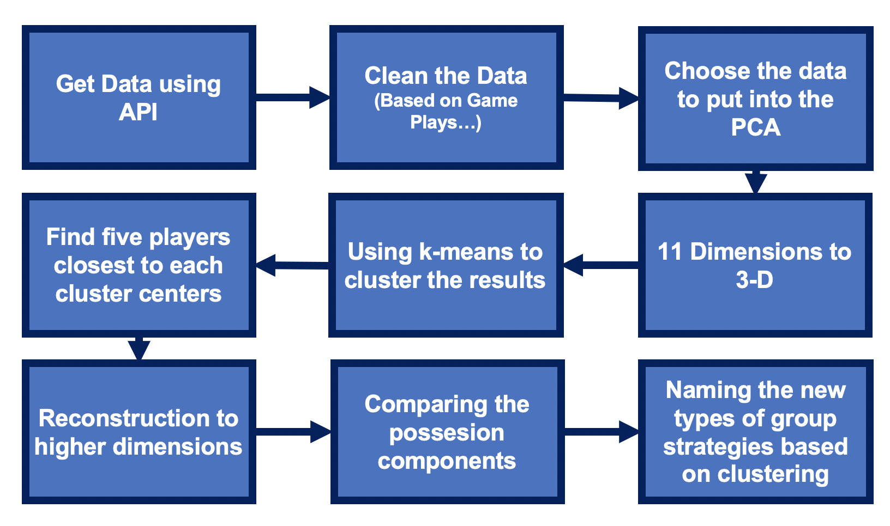
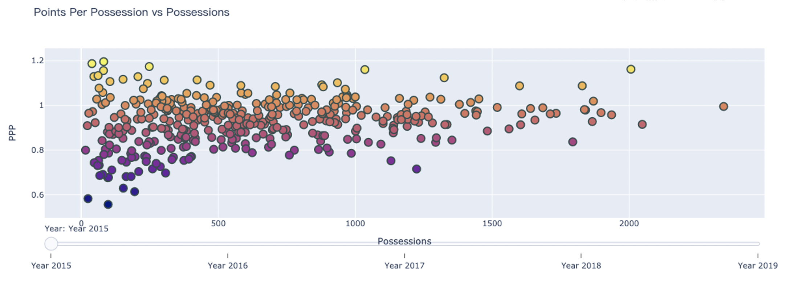
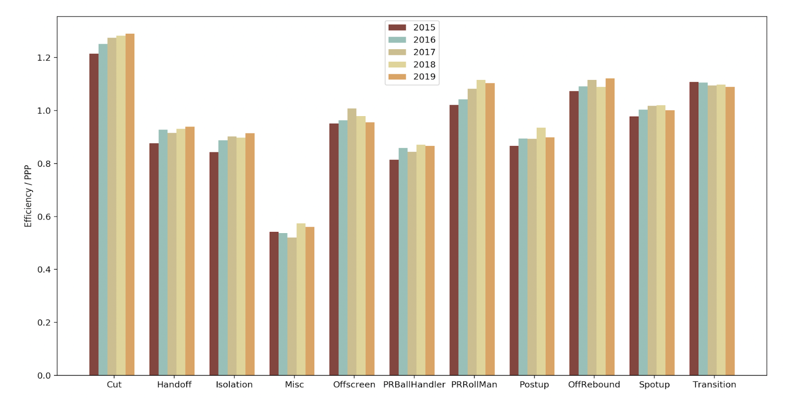
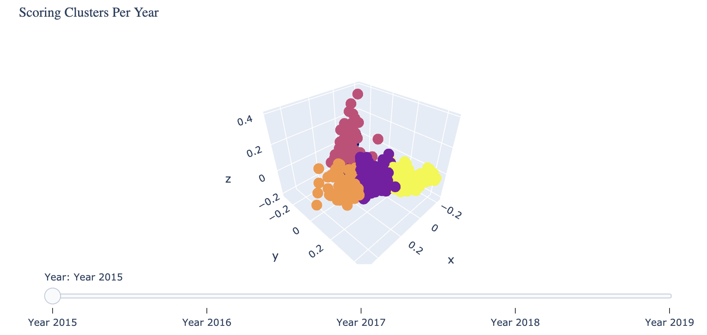
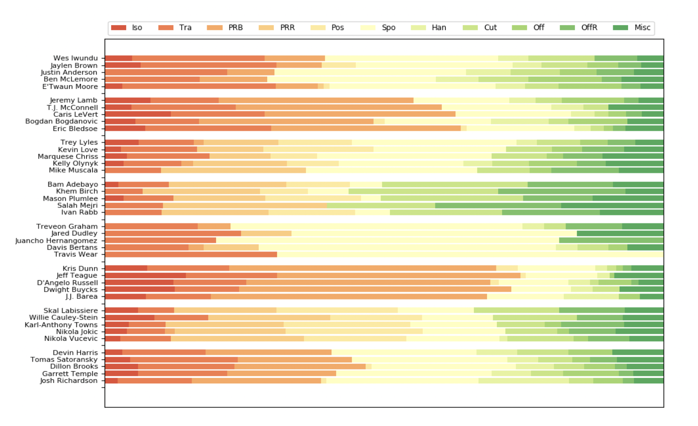
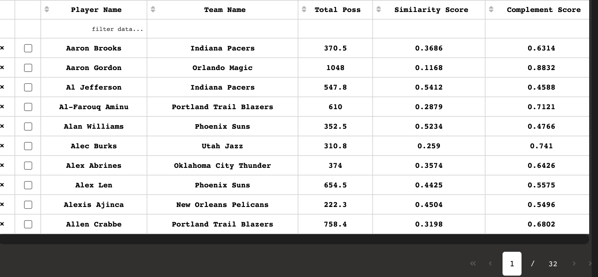

Group 2¶
Himanshu Gupta, Hao Zhao, Ishan Mehta, Sophy Lee, Suhrid Subramanian, Yi Yu
Motivation¶
Methodology¶
Flow Chart¶

Dataset¶
Dashboard Introduction¶
Page 1: Best Scorers in the league¶

This plot allows us to see how player volume scales with scoring efficiency. This is an important plot, as in order to understand extraordinary scoring, we must also understand scoring burdens. This allows an NBA front office to contextualize specific players performances against the rest of the league. Thus we can select players with scoring volume-efficiency balance a specific team needs.
[4]:
import pandas as pd
import plotly.graph_objs as go
flist = ['data/data_cleaned/poss_ppp_data/poss2015.csv', 'data/data_cleaned/poss_ppp_data/poss2016.csv', 'data/data_cleaned/poss_ppp_data/poss2017.csv',
'data/data_cleaned/poss_ppp_data/poss2018.csv', 'data/data_cleaned/poss_ppp_data/poss2019.csv']
def scatter_plot_in(fname):
'''
Function that outputs total poss, ppp, and name of each player through 3 lists
fname is expected directory path
fname must use data in ./poss_ppp_data
'''
pt_abrv = ['iso', 'tr', 'prb', 'prr', 'pu', 'su', 'ho', 'cut', 'os', 'putback', 'misc']
df = pd.read_csv(fname)
df_calc = pd.DataFrame()
for i in pt_abrv:
df_poss = df[i + '_poss']
df_ppp = df[i + '_ppp']
df_points = df_ppp * df_poss
df_calc[i + '_points'] = df_points
ppp = df_calc.sum(axis=1) / df['total_poss']
return df['total_poss'].tolist(), ppp.tolist(), df['PLAYER_NAME'].tolist()
def create_slider_scatter(fname_list, title_graph, yaxis_label, x_axis_label):
"""
get xy should take in the list of filenames for each year and output the x values, i.e. total possessions for the year vs total PPP.
PPP should be weighted according to the number of possessions right, like a players season PPP, is PPP_i * Poss_i, where i is the playtype
"""
fig = go.Figure()
colorscale_curr = [[0.0, "rgb(165,0,38)"], [0.1111111111111111, "rgb(215,48,39)"],
[0.2222222222222222, "rgb(244,109,67)"], [0.3333333333333333, "rgb(253,174,97)"],
[0.4444444444444444, "rgb(254,224,144)"], [0.5555555555555556, "rgb(224,243,248)"],
[0.6666666666666666, "rgb(171,217,233)"], [0.7777777777777778, "rgb(116,173,209)"],
[0.8888888888888888, "rgb(69,117,180)"], [1.0, "rgb(49,54,149)"]]
colorscale_curr.reverse()
# just going to use global variable list of path strings;
for i in range(len(flist)):
x_1, y_1, names = scatter_plot_in(flist[i])
fig.add_trace(
go.Scatter(x=x_1, y=y_1, text=names, hoverinfo='text', mode='markers',
marker=dict(color=y_1, colorscale=colorscale_curr, size=12,
line=dict(width=2, color='DarkSlateGrey')), visible=False,
name="Points Per Possession vs Possessions " + str(i)
))
fig.data[0].visible = True
steps = []
for i in range(len(fig.data)):
step = dict(
method="restyle",
args=["visible", [False] * len(fig.data)],
label='Year ' + str(i + 2015)
)
step["args"][1][i] = True # Toggle i'th trace to "visible"
steps.append(step)
sliders = [dict(
active=5,
currentvalue={"prefix": "Year: "},
pad={"t": 5},
steps=steps
)]
start_index = 2015
fig.update_layout(
sliders=sliders,
# title = "9 Cluster classification of players based on Scoring Styles"
title={"text": title_graph},
xaxis_title=x_axis_label,
yaxis_title=yaxis_label,
)
return fig
Page 2: Efficieny of PlayTypes¶

Here we plot the play-type efficiency for each of the years, this will allow teams to understand, what the efficiency is for each playtype on a league-wide basis. Teams are encouraged to construct plays that generate the highest yield. For fanatics, this can provide a rationale behind changing team strategy over the years.
[11]:
import os
import numpy as np
import pandas as pd
import matplotlib.pyplot as plt
from collections import defaultdict
playtypes = ['cut', 'ho', 'iso', 'misc',
'os', 'prb', 'prr', 'pu',
'putback', 'su', 'tr']
playtype_shortcut = {'iso': 'Isolation', 'tr': 'Transition', 'prb': 'PRBallHandler',
'prr': 'PRRollMan', 'pu': 'Postup', 'su': 'Spotup',
'ho': 'Handoff', 'cut': 'Cut', 'os': 'Offscreen',
'putback': 'OffRebound', 'misc': 'Misc'}
def fig_to_uri(in_fig, close_all=True, **save_args):
# type: (plt.Figure) -> str
"""
Save a figure as a URI
:param in_fig:
:return:
"""
out_img = BytesIO()
in_fig.savefig(out_img, format='png', **save_args)
if close_all:
in_fig.clf()
plt.close('all')
out_img.seek(0) # rewind file
encoded = base64.b64encode(out_img.read()).decode("ascii").replace("\n", "")
return "data:image/png;base64,{}".format(encoded)
def get_plot_data(aggr_data=None):
"""
param: aggr_data, str, where the yearly aggregated data is
param: outdir, str, folder to store output figures
return: plot_data, dictionary = {year: data list of the year}
"""
assert aggr_data, "Input directory is invalid."
files = os.listdir(aggr_data)
plot_data = defaultdict(list)
for f in files:
df = pd.read_csv(
os.path.join(aggr_data, f)
)
year = "".join(
[c for c in f if '0' <= c <= '9']
)
year = int(year)
for col in playtypes:
df[col + "_pts"] = df[col + "_ppp"] * df[col + "_poss"]
df_sum = df.sum()
for col in playtypes:
plot_data[year].append(
df_sum[col + "_pts"] / df_sum[col + "_poss"]
)
return plot_data
def plot_most_effi_figure(aggr_data, outdir=None):
"""
param: aggr_data, str, where the yearly aggregated data is
param: outdir, str, folder to store output figures
return: save figures in the outdir
"""
if outdir and not os.path.exists(outdir):
os.mkdir(outdir)
plot_data = get_plot_data(aggr_data)
x = np.arange(11, dtype=np.float64)
bar_width, start = 0.15, x
colors = ["#823935", "#89BEB2", "#C9BA83", "#DED38C", "#DE9C53"]
fig=plt.figure(figsize=(10, 5))
for year in range(2015, 2020):
plt.bar(
start,
plot_data[year],
bar_width,
color=colors[year - 2015],
label=str(year)
)
start += bar_width
plt.legend(loc="upper center")
plt.xticks(
x - 5.5 * bar_width / 2, [playtype_shortcut[x] for x in playtypes]
)
plt.xticks(rotation=20)
plt.ylabel("Efficiency / PPP")
# plotly_fig = mpl_to_plotly(fig)
uri = fig_to_uri(fig)
return uri
Page 3: Behaviour of typical players¶

This is a K-means clustering of player roles over the last 5 years, based on play-style. Using the distribution and efficiency of play-style, we have managed to redefine player roles over the period of the analytics shift in basketball. We look at a PCA of the play-type data across the 5 years, and attempt the best K-means clustering over the last 5 years individually over a fixed axis. An NBA front office could use this chart to gain a better understanding of the NBA role landscape and look at how player roles have changed over the past 5 years. This can be seen in how the points on the graph spread out over the years, allowing for additional clusters. An additional feature to this, is exploring how certain players have changed their roles over their years in the league, through their movement on the fixed axis.
[1]:
import pandas as pd
from sklearn.cluster import KMeans
import numpy as np
from sklearn.decomposition import PCA
from sklearn.metrics import silhouette_score
def pca_processing(fname, n_comp =3):
"""
Function to decrease the dimension of the players based on their POSS_PCT
:param fname: the path of the pca_table file
:param n_comp: the number of main components we want to use
:return: data after pca with dimension n*n_comp; player names, the pca dimensions correspond to a pca fit across all years
"""
df_list = []
frame_list = ['2015_pca_table.csv', '2016_pca_table.csv','2017_pca_table.csv','2018_pca_table.csv','2019_pca_table.csv']
for each in frame_list:
df_new = pd.read_csv("/".join(fname.split('/')[:-1])+"/"+each)
df_list.append(df_new)
df_concat = pd.concat(df_list)
df = pd.read_csv(fname)
kept_cols = [
col for col in df.columns if col.endswith("freq")
]
kept_cols.append("PLAYER_NAME")
kept_cols.reverse()
df = df[kept_cols]
df_concat = df_concat[kept_cols]
player_name = df["PLAYER_NAME"]
data_org = df_concat.iloc[:, 2:]
data_test = df.iloc[:, 2:]
pca = PCA(n_components=n_comp)
pca.fit(data_org)
data_pca = data_test @ pca.components_.T
assert len(data_pca) == len(player_name)
return data_pca, player_name
def k_means(fname, dim=3, cluster_num=5):
'''
Function to cluster the data into cluster_num groups and visualize them in a 3D space
:param fname: the path of the pca_table file
:param dim: the number of dimensions we want to use
:param cluster_num: the number of clusters we want to cluster them
:return: NONE
'''
assert isinstance(fname, str)
data, names = pca_processing(fname, dim)
X = np.array(data)
k_means = KMeans(n_clusters=cluster_num).fit(X)
labels = k_means.labels_
distance = k_means.transform(X)
return names, X, labels, distance
def get_silscores(fname, dim=3):
best=0
final_clus=0
for cluster_num in range(5,9):
data, names = pca_processing(fname, dim)
X = np.array(data)
k_means = KMeans(n_clusters=cluster_num).fit(X)
labels = k_means.labels_
silhouette_avg = silhouette_score(X, labels)
if silhouette_avg >= best:
best = silhouette_avg
final_clus= cluster_num
return best, final_clus
Page 4: Top 5 players per cluster¶

The graph here shows the playtype distributions of the 5 players that best match each of the archetypes created by K-Means clustering. This allows teams a look into the type of contributions they can expect from each archetype, by using existing players as examples of the playstyles. This is a useful tool for a front office that supplements the previous chart, since while it is difficult to name the clusters, we may still view the style of play embodied by the clusters, and choose the players from the clusters that best serve the current needs of a team
[18]:
def calculate_top5(distance, names):
'''
Function to find the top5 players who are the most closest to the k-means's cluster center
:param distance: Distance of each player to the clusters
:param names: names of each player
:return: top5 names of each clusters
'''
dim = len(distance[0])
result = np.zeros((dim, 5))
top5_name = []
for i in range(dim):
temp = []
curr = np.array(distance[:, i])
min_5 = curr.argsort()[:5]
result[i, :] = min_5
for index in min_5:
temp.append(names[index])
top5_name.append(temp)
return top5_name
def top5_img(distance, names, year, cluster_num, test = False):
'''
:param distance: distance of player to kmeans center
:param names: player names
:param year: year
:return: dictionary of player names and their play type
'''
assert 2015 <= year <= 2019
top5names = calculate_top5(distance, names)
path = "data/data_cleaned/pca_data/" + str(year) + "_pca_table.csv"
if test:
path = "../data/data_cleaned/pca_data/" + str(year) + "_pca_table.csv"
df = pd.read_csv(path)
data_per_player = np.zeros((1, 11))
for i in range(len(top5names)):
for j in range(len(top5names[i])):
new_df = df[df['PLAYER_NAME'] == top5names[i][j]]
data = new_df[
["iso_freq", "tr_freq", "prb_freq", "prr_freq", "pu_freq", "su_freq", "ho_freq", "cut_freq", "os_freq",
"putback_freq", "misc_freq"]]
data = data.values.tolist()
data = np.array(data)[0]
data_per_player = np.vstack((data_per_player, data))
data_per_player = data_per_player[1:,:]
result = {}
for i in range(cluster_num):
for j in range(5):
result[top5names[i][j]] = data_per_player[i * 5 + j, :]
return result
Page 5: Frequency of PlayTypes¶

Here we can see the selected player’s playstyle for the given year. We can see how over time these playstyles may change due to trends in the league. Some prominent examples would be brook Lopez’s transformation from a traditional back to the basket center to a sport-up shooter.
[2]:
import matplotlib.pyplot as plt
import pandas as pd
import numpy as np
from io import BytesIO
import base64
def func(pct, allvals):
absolute = int(pct/100.*np.sum(allvals))
return "{:.1f}%".format(pct, absolute)
def fig_to_uri(in_fig, close_all=True, **save_args):
# type: (plt.Figure) -> str
"""
Save a figure as a URI
:param in_fig:
:return:
"""
out_img = BytesIO()
in_fig.savefig(out_img, format='png', **save_args)
if close_all:
in_fig.clf()
plt.close('all')
out_img.seek(0) # rewind file
encoded = base64.b64encode(out_img.read()).decode("ascii").replace("\n", "")
return "data:image/png;base64,{}".format(encoded)
def draw_pie_chart(name, year):
'''
Function to draw the pie chart of players of different PlayType.
Just input the player name and the year you want to know.
:param name: Player name, string
:param year: year
:return:
'''
assert isinstance(name, str)
assert 2015 <= year <= 2019
path = "data/data_cleaned/pca_data/" + str(year) + "_pca_table.csv"
df = pd.read_csv(path)
new_df = df[df['PLAYER_NAME'] == name]
data = new_df[["iso_freq", "tr_freq", "prb_freq", "prr_freq", "pu_freq", "su_freq", "ho_freq", "cut_freq", "os_freq",
"putback_freq", "misc_freq"]]
data = data.values.tolist()
data = np.array(data)[0]
data = data / np.sum(data)
fig, ax = plt.subplots(figsize=(6, 3), subplot_kw=dict(aspect="equal"))
recipe = ["Isolation",
"Transition",
"PRBallHandler",
"PRRollMan",
"Postup",
"Spotup",
"Handoff",
"Cut",
"Offscreen",
"OffRebound",
"Misc"]
ingredients = [x.split()[-1] for x in recipe]
wedges, texts, autotexts = ax.pie(data, autopct=lambda pct: func(pct, data),
textprops=dict(color="w"), shadow=False,
colors=["cornflowerblue", "mediumseagreen", "gray", "salmon", "burlywood", "plum",
"peru", "sandybrown", "teal", "darkkhaki", "pink"])
ax.legend(wedges, ingredients,
title="Freq of PlayTypes",
loc="center left",
bbox_to_anchor=(1, 0, 0.5, 1))
plt.setp(autotexts, size=8, weight="bold")
ax.set_title(name + " " + str(year))
our_url= fig_to_uri(fig)
return our_url
Page 6: Best fit player targets¶

We have used playtype data and Jensen Shannon divergence to find the best fit players for each team. As a team, you would prefer to target players who are best suited to your current playstyle, or would add a new dimension to your offensive capabilities. The similar players are the ones that would best slot into the teams current distribution with the most synergy. The complement score gives you players that are proficient in the areas that the selected team is weakest in.
[14]:
import numpy as np
import scipy.stats
import pandas as pd
from scipy.stats import entropy
from numpy.linalg import norm
def JSD(P,Q):
"""
More numberically stable Jensen Shannon formula
Inputs: P and Q, two vectors/lists
output: float
"""
_P = P / norm(P, ord=1)
_Q = Q / norm(Q, ord=1)
_M = 0.5 * (_P + _Q)
return 0.5 * (entropy(_P, _M) + entropy(_Q, _M))
def jensen_shannon_distance(p, q):
"""
method to compute the Jenson-Shannon Distance
between two probability distributions
"""
# convert the vectors into numpy arrays in case that they aren'
divergence = JSD(p,q)
# compute Jensen Shannon Divergence
#divergence = (scipy.stats.entropy(p, m) + scipy.stats.entropy(q, m)) / 2
# compute the Jensen Shannon Distance
distance = np.sqrt(divergence)
return distance
def sim_com(df1, df2, team, num_poss = 0):
"""
Takes in the two required dataframes, team numbers and a possession limit and outputs a table/dataframe of the players sorted by compatibility
to the given team
Input: df1,df2,team, num_poss (DF, DF, Str, Float)
Output: DF
"""
assert isinstance(num_poss, float) or isinstance(num_poss, int)
assert num_poss >= 0
assert isinstance(df1, pd.DataFrame) and isinstance(df2, pd.DataFrame)
df2 = df2[df2['TEAM_NAME'] == team]
df_temp = df1[df1["TEAM_NAME"] != team]
pt_abrv = ['iso_freq', 'tr_freq', 'prb_freq', 'prr_freq', 'pu_freq', 'su_freq', 'ho_freq', 'cut_freq', 'os_freq', 'putback_freq', 'misc_freq']
q = df2[pt_abrv]
q = list(q.iloc[0])
diff_list = []
for index, row in df_temp.iterrows():
p = list(row[pt_abrv])
diff_list.append(round(jensen_shannon_distance(p,q), 4))
df_temp['Similarity Score'] = diff_list
df_temp['Complement Score'] = df_temp.apply(lambda row: round(1-row['Similarity Score'], 4) , axis=1)
df_temp = df_temp[df_temp['total_poss'] >= num_poss]
return df_temp
Dash Implementation¶
[ ]:
from dash.dependencies import Input, Output
import dash
import dash_core_components as dcc
import dash_html_components as html
import matplotlib.pyplot as plt
import pandas as pd
from src.navbar import Navbar
import dash_bootstrap_components as dbc
import flask
import matplotlib
from dash_table import DataTable
from appUpdate.figure_generate import *
def get_options(list_stocks):
dict_list = []
for i in list_stocks:
dict_list.append({'label': i, 'value': i})
return dict_list
matplotlib.use('agg')
# for page6
path = "data/data_cleaned/pca_data/2015_pca_table.csv"
df = pd.read_csv(path)
names = df['PLAYER_NAME']
['PLAYER_NAME', 'TEAM_NAME', 'total_poss', 'Similarity Score', 'Complement Score']
nameList = {'PLAYER_NAME': 'Player Name',
'TEAM_NAME': 'Team Name',
'total_poss': 'Total Poss',
'Similarity Score': 'Similarity Score',
'Complement Score': 'Complement Score'}
app_flask = flask.Flask(__name__)
homepage = dash.Dash(__name__, external_stylesheets=[dbc.themes.UNITED], server=app_flask, url_base_pathname='/')
app = dash.Dash(__name__, external_stylesheets=[dbc.themes.UNITED], server=app_flask, url_base_pathname='/page1/')
app2 = dash.Dash(__name__, external_stylesheets=[dbc.themes.UNITED], server=app_flask, url_base_pathname='/page2/')
app3 = dash.Dash(__name__, external_stylesheets=[dbc.themes.UNITED], server=app_flask, url_base_pathname='/page3/')
app4 = dash.Dash(__name__, external_stylesheets=[dbc.themes.UNITED], server=app_flask, url_base_pathname='/page4/')
app5 = dash.Dash(__name__, external_stylesheets=[dbc.themes.UNITED], server=app_flask, url_base_pathname='/page5/')
app6 = dash.Dash(__name__, external_stylesheets=[dbc.themes.UNITED], server=app_flask, url_base_pathname='/page6/')
nav = Navbar()
homepage.layout = html.Div(
children=[
html.Div([nav]),
html.Div(className='row', # Define the row element
children=[
html.Div(className='four columns div-user-controls bg-black',
children=[
html.H2('Description'),
html.Div(id='app1text', children='This Web-App serves as a Sports Intelligence platform for NBA teams. Our target users are NBA front-offices/analytics teams. NBA front offices would wish to explore different tools that would allow them to make informed decisions on NBA player roles and paradigms, in order to select the best-fitting players for their teams.')
]
), # Define the left element
html.Div(className='eight columns div-for-charts bg-black',
style={"display": "flex",
'align-items':'center'},
children=[
html.Img(id='Homepage2',src='assets/home_p2.png',height='auto',width='40%',
),
html.H1(children='Group 2:',style={
'color':'white'
}),
html.H3('Himanshu Gupta'),
html.H3('Hao zhao'),
html.H3('Ishan Mehta'),
html.H3('Sophy Lee'),
html.H3('Suhrid Subramaniam'),
html.H3('Yi Yu'),
]) # Define the right element
])
])
app.layout = html.Div(
children=[
html.Div([nav]),
html.Div(className='row', # Define the row element
children=[
html.Div(className='four columns div-user-controls',
children=[
html.H2('Description'),
html.Div(id='app1text', children='This is a K-means clustering of player roles over the last 5 years, based on play-style. Using the distribution and efficiency of play-style, we have managed to redefine player roles over the period of the analytics shift in basketball. We look at a PCA of the play-type data across the 5 years, and attempt the best K-means clustering over the last 5 years individually over a fixed axis. An NBA front office could use this chart to gain a better understanding of the NBA role landscape and look at how player roles have changed over the past 5 years. This can be seen in how the points on the graph spread out over the years, allowing for additional clusters. An additional feature to this, is exploring how certain players have changed their roles over their years in the league, through their movement on the fixed axis.')
]
), # Define the left element
html.Div(className='eight columns div-for-charts bg-grey',
children=[
html.H2('K-Means clustering for new-era player roles'),
dcc.Graph(
figure=update_app1(), config={'displayModeBar': True}
)
]) # Define the right element
])
])
app2.layout = html.Div(
children=[
html.Div([nav]),
html.Div(className='row', # Define the row element
children=[
html.Div(className='four columns div-user-controls',
children=[
html.H2('Description'),
html.Div(id='app2text', children='This plot allows us to see how player volume scales with scoring efficiency. This is an important plot, as in order to understand extraordinary scoring, we must also understand scoring burdens. This allows an NBA front office to contextualize specific players performances against the rest of the league. Thus we can select players with scoring volume-efficiency balance a specific team needs.')
]
), # Define the left element
html.Div(className='eight columns div-for-charts bg-grey',
children=[
html.H2('Scoring Efficiency vs Volume'),
dcc.Graph(
figure=update_app2(), config={'displayModeBar': True}
)
]) # Define the right element
])
])
app3.layout = html.Div(
children=[
html.Div([nav]),
html.Div(className='row', # Define the row element
children=[
html.Div(className='four columns div-user-controls',
children=[
html.H2('Years options'),
html.Div(className='div-for-dropdown',
children=[
dcc.Dropdown(id='years',
options=get_options(
['2015', '2016', '2017', '2018', '2019']),
multi=False,
value='2015',
style={'backgroundColor': '#1E1E1E'},
className='stockselector')
],
style={'color': '#1E1E1E'}),
html.H2('Description'),
html.Div(id='app3text', children='The graph here shows the playtype distributions of the 5 players that best match each of the archetypes created by K-Means clustering. This allows teams a look into the type of contributions they can expect from each archetype, by using existing players as examples of the playstyles. This is a useful tool for a front office that supplements the previous chart, since while it is difficult to name the clusters, we may still view the style of play embodied by the clusters, and choose the players from the clusters that best serve the current needs of a team')
]
), # Define the left element
html.Div(className='eight columns div-for-charts bg-grey',
children=[
html.H2('Top 5 players that personify each cluster archetype'),
dcc.Graph(
id='gapminder2', config={'displayModeBar': True}
)
]) # Define the right element
])
])
app4.layout = html.Div(
children=[
html.Div([nav]),
html.Div(className='row', # Define the row element
children=[
html.Div(className='four columns div-user-controls',
children=[
html.H2('Description'),
html.Div(id='app4text', children='Here we plot the play-type efficiency for each of the years, this will allow teams to understand, what the efficiency is for each playtype on a league-wide basis. Teams are encouraged to construct plays that generate the highest yield. For fanatics, this can provide a rationale behind changing team strategy over the years.')
]
), # Define the left element
html.Div(className='eight columns div-for-charts bg-grey',
children=[
html.H2('Playtype efficiency over the years'),
html.Img(src=update_app4())
]) # Define the right element
])
])
app5.layout = html.Div(
children=[
html.Div([nav]),
html.Div(className='row', # Define the row element
children=[
html.Div(className='four columns div-user-controls',
children=[
html.H2('Years options'),
html.Div(className='div-for-dropdown',
children=[
dcc.Dropdown(id='years5',
options=get_options(
['2015', '2016', '2017', '2018', '2019']),
multi=False,
value='',
style={'backgroundColor': '#1E1E1E'},
placeholder='please pick year',
searchable=True
),
dcc.Dropdown(id='names5',
options='',
multi=False,
value='',
style={'backgroundColor': '#1E1E1E'},
placeholder='please pick name',
searchable=True
)
],
style={'color': '#1E1E1E'}),
html.H2('Description'),
html.Div(id='app5text', children='We have used playtype data and Jensen Shannon divergence to find the best fit players for each team. As a team, you would prefer to target players who are best suited to your current playstyle, or would add a new dimension to your offensive capabilities. The similar players are the ones that would best slot into the teams current distribution with the most synergy. The complement score gives you players that are proficient in the areas that the selected team is weakest in.')
]
), # Define the left element
html.Div(className='eight columns div-for-charts bg-grey',
children=[
html.H2('Best fit player targets'),
DataTable(
id="gapminder4",
columns=[{'id': c, 'name': nameList[c]} for c in
['PLAYER_NAME', 'TEAM_NAME', 'total_poss',
'Similarity Score', 'Complement Score']],
page_size=10,
style_header={
'backgroundColor': 'white',
'fontWeight': 'bold',
'textAlign': 'center',
'color': 'black'
},
style_cell={'padding': '5px',
'backgroundColor': 'white',
'fontWeight': 'bold',
'textAlign': 'center',
'color': 'black',
'width': '60px'
},
editable=True,
filter_action="native",
sort_action="native",
sort_mode="multi",
column_selectable="single",
row_selectable="multi",
row_deletable=True,
selected_columns=[],
selected_rows=[],
page_action="native",
page_current=0,
style_table = {'overflowX': 'auto', 'width': '98%'}
)
])
])
])
app6.layout = html.Div(
children=[
html.Div([nav]),
html.Div(className='row', # Define the row element
children=[
html.Div(className='four columns div-user-controls',
children=[
html.H2('Years options'),
html.Div(className='div-for-dropdown',
children=[
dcc.Dropdown(id='years',
options=get_options(['2015', '2016', '2017', '2018', '2019']),
multi=False,
value='2015',
searchable=True,
style={'backgroundColor':'#1E1E1E'},
placeholder='please pick year',
className='stockselector'),
dcc.Dropdown(id='names',
options=get_options(names),
multi=False,
value='James Harden',
style={'backgroundColor': '#1E1E1E'},
placeholder='please pick player',
className='stockselector')],
style={'backgroundColor':'#1E1E1E'}),
html.Div()
]
), # Define the left element
html.Div(className='eight columns div-for-charts bg-grey',
children=[
html.H2('Pie Chart'),
html.Div(children=[html.Img(id='gapminder5', src=''),
html.Img(id='playphoto', src='', alt='')]),
html.Div(id='app6text', children='123')
]) # Define the right element
])
])
@app3.callback(Output('gapminder2', 'figure'), [Input('years', 'value')])
def update_app(year):
return update_app3(year)
@app5.callback(Output('gapminder4', 'data'), [Input('years5', 'value'), Input('names5', 'value')])
def update_app(year, name):
return update_app5(year, name)
@app5.callback(Output('names5', 'options'), [Input('years5', 'value')])
def update_options(year):
path5 = 'data2/teams_csv/teams_' + year + '_profile_table.csv'
df5 = pd.read_csv(path5)
names5 = df5['TEAM_NAME']
name_new = []
for i in names5:
name_new.append(i)
return get_options(name_new)
@app6.callback(Output('gapminder5', 'src'), [Input('years', 'value'), Input('names', 'value')])
def update_app(year, name):
return update_app6(int(year), name)
@app6.callback(Output('playphoto', 'src'), [Input('names', 'value')])
def update_app(name):
return update_photo6(name)
@app6.callback(Output('names', 'options'), [Input('years', 'value')])
def update_options(year):
path = "data/data_cleaned/pca_data/" + year + "_pca_table.csv"
df = pd.read_csv(path)
names = df['PLAYER_NAME']
return get_options(names)
@app6.callback(Output('app6text', 'children'), [Input('years', 'value'), Input('names', 'value')])
def update_text(year, name):
return "Here we can see the selected player's playstyle for the given year. We can see how over time these playstyles may change due to trends in the league. Some prominent examples would be brook Lopez's transformation from a traditional back to the basket center to a sport-up shooter."
if __name__ == '__main__':
app_flask.run(host="0.0.0.0")